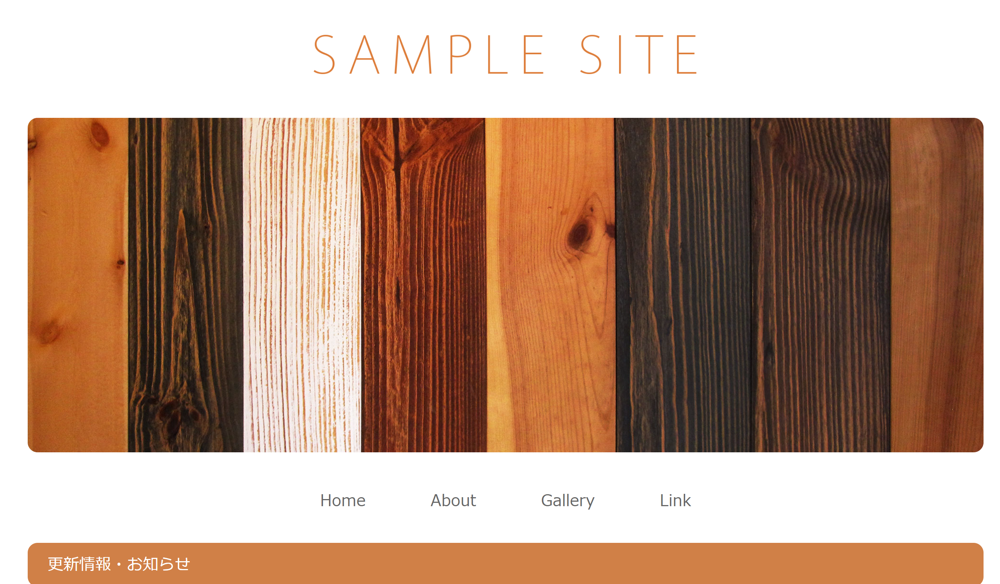
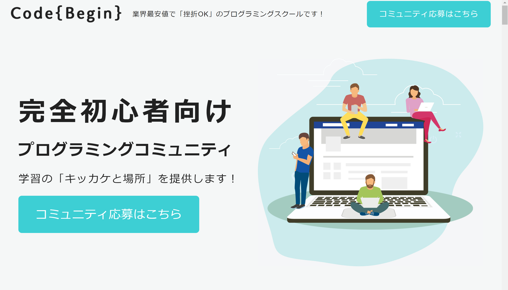
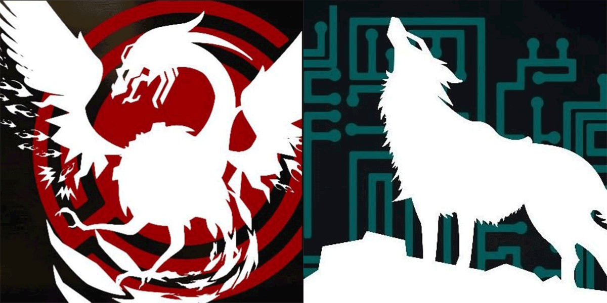
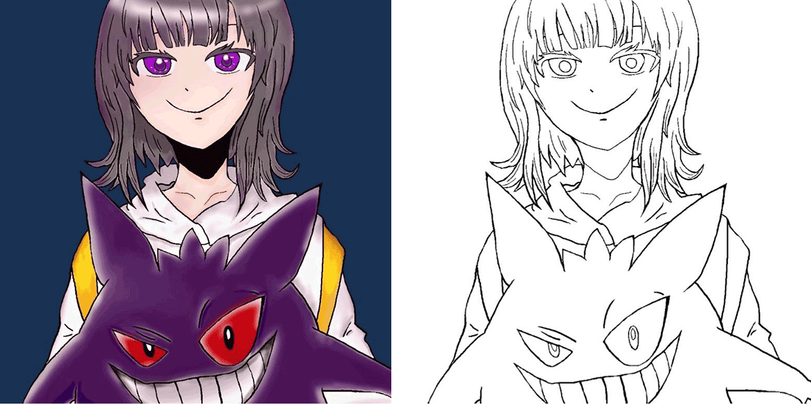
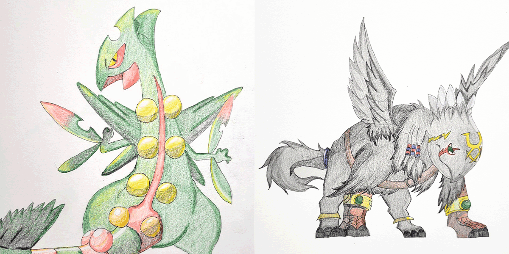
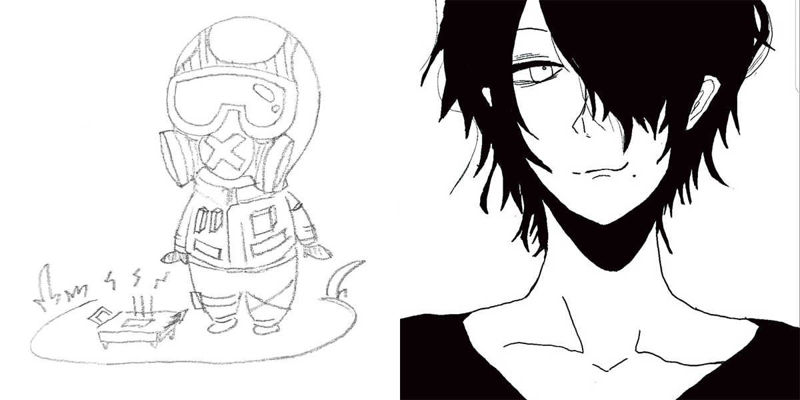
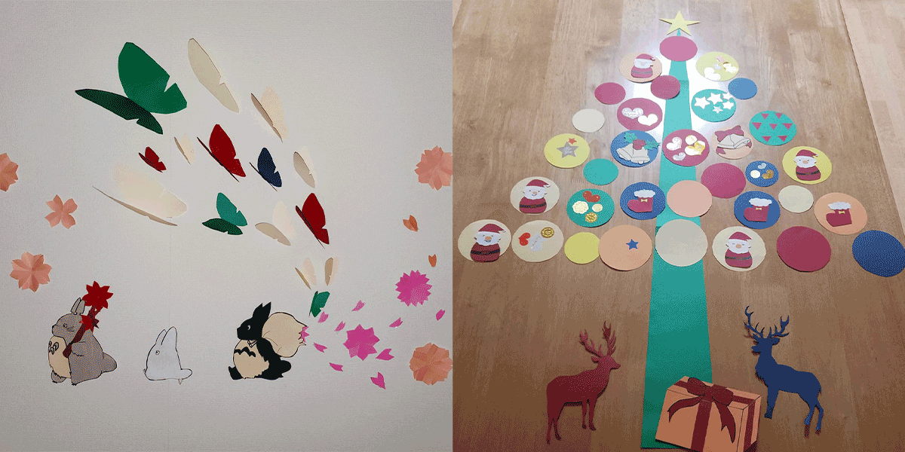
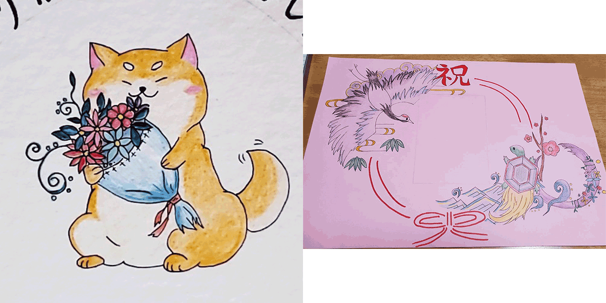

Work
制作物

実際のサイト制作はこちら
サイト摸写コーディング
制作時間10日（1日8時間）
使用した言語HTMLとCSS
苦戦したポイント
- 初めての制作だったので、ひたすら調べながらコーディングしたこと。
- ロゴとトップ写真を中央に揃えること。
こだわったポイント
- レスポンシブ対応にしたこと。
- 文字はコピーせず、タイピング練習をしたこと。
- 調べて分からなければ、答えを見て理解すること。

サイト摸写コーディング
制作時間15日（1日8時間）
使用した言語HTMLとCSS
苦戦したポイント
- flotを使い2カラムにした事。flotの理解が難しかった。
- ハンバーガーメニュー。クリックしたときに表示されない事があり苦戦。
- サービスコーディングでカーソルを合わせた時に浮き上がっているようにしたこと。
こだわったポイント
- スマホで見た場合、ハンバーガーメニューを作り見やすくしたこと。
- navで見たいサイトをクリックしたら、どのサイトを使用しているかを一目で分かるようにしたこと。

実際のサイト制作はこちら
サイト摸写コーディング
制作時間25日（1日8時間）
使用した言語HTMLとCSSとJavaScript
苦戦したポイント
- コミュニティ紹介写真とQ&Aに動きを付けた事
- nav欄のロゴ、文字、ボタンの配置
- 創業者の写真、文、背景の配置の位置決め
- 全体的に苦戦しました。
こだわったポイント
- flex主に使い、flexを理解すること。
- JavaScriptを使い動きを出したこと
- cssではBEMを使い、コードを見やすくしたこと。
{kind=link}
Illustration
イラスト集

ゲームのアイコン（エンブレム）
シンプルだけどカッコイイをイメージして作成しました。不死鳥と狼です。

線画では、綺麗に見えるように調整し強弱を付けました。
誕生日プレゼントで作成した
SNS用アイコン
友達の好きなキャラクター、色、雰囲気をイメージして作成しました。SNS用アイコン
線画では、綺麗に見えるように調整し強弱を付けました。

色鉛筆で表現しました、影の薄さが難しく勉強になりました。
摸写イラスト
私自身が好きなキャラクターを模写したイラストです。色鉛筆で表現しました、影の薄さが難しく勉強になりました。

右がオリジナルキャラクターで名前は決めてないですが、黒白で似合う男性をイメージして描きました。
ゲームキャラとオリジナルキャラ
左がレインボーシックスというゲームのキャラをちびキャラに作ってみました。右がオリジナルキャラクターで名前は決めてないですが、黒白で似合う男性をイメージして描きました。

左が春をイメージ、右がクリスマスツリーをイメージして作成しました。
職場のデザイン
利用者様にも参加できるデザインを作成しました。左が春をイメージ、右がクリスマスツリーをイメージして作成しました。

右が百歳になられる方へ渡した、百寿をイメージしたイラストです。
退職のイラスト、百寿のイラスト
左が退職される方へ渡した、花束を持った柴犬です。右が百歳になられる方へ渡した、百寿をイメージしたイラストです。